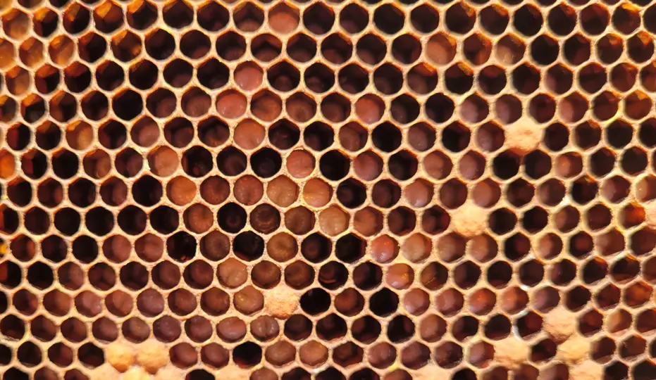
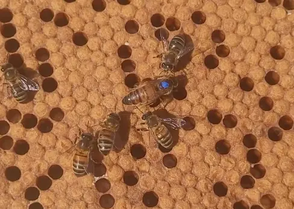

Jump to
Short field answers first, then deeper detail.
Read stages
Red flags
Brood stages: eggs, larvae, capped
2–3 min
What “good” looks like
2–4 min
Patchy brood: common causes
4–6 min
Cappings guide: worker/drone + caution signs
3–5 min
What to record (notes template)
1–2 min
When to seek advice
Quick
FAQ
Quick answers
Brood stages: eggs → larvae → capped
Field answerField answer
If you can see eggs, the queen was laying very recently. If you see young larvae in a “C” shape,
you’re usually within a few days. Capped brood tells you what successfully made it through to pupation.
Eggs
Fresh evidence
- Single egg per cell is the usual goal (especially in worker brood).
- Hardest to see — use light and angle.
- Strong indicator the queen was present and laying very recently.
Larvae
Feeding phase
- Young larvae often sit in a “C” shape with a glossy bed of food.
- Healthy larvae look pearly/white and moist (not dried out).
- Larvae stage is where chilling or starvation can show up.
Capped brood
Outcome
- Solid capped worker brood suggests good continuity.
- Uneven cappings can be normal — look for patterns and other clues.
- Use cappings as a prompt to record evidence, not to diagnose instantly.
Stage photos (your images)
Drop your own close-ups in these slots when you’re ready.



What a good brood pattern looks like
Field answerField answer
“Good” often means consistent rather than “perfect.” Look for broad areas of worker brood, a sensible mix of stages,
and enough stores/pollen nearby to feed larvae.
Normal variation
Common
- Small gaps can happen after cold snaps or during nectar flow shifts.
- A young queen can improve pattern over a few weeks.
- Brood nest edges can look “messier” than the centre.
Signals of strength
Positive
- Multiple frames with mixed stages (eggs/larvae/capped).
- Healthy larvae: pearly, moist, consistent.
- Stores and pollen positioned close to brood.
Keep it evidence-based
Notes
- Describe what you see, not what you fear.
- Photos help you compare week-to-week.
- Use “trend over time” rather than one-frame judgement.
Patchy brood: common causes
Field answerField answer
Patchiness is a symptom, not a diagnosis. Consider: queen performance, weather/chill, feeding, varroa/virus pressure,
and brood nest disruption — then look for confirming evidence. If you are unsure which direction to investigate first,
use the colony health triage tool.
Queen factors
Common
- Young queen settling in (pattern often improves).
- Older/underperforming queen (pattern declines over time).
- Interrupted laying due to weather/nectar changes.
Weather / chill / handling
Seasonal
- Cold snaps can chill brood, especially at edges.
- Frequent inspections can disrupt brood temperature.
- Brood nest split by moving frames can slow progress.
Varroa / virus pressure
Watch
- Heavier varroa loads can correlate with poor brood viability.
- Look for additional clues (e.g., abnormal brood, weak bees).
- Use your monitoring plan rather than guessing.
Deeper detail
The key is confirmation. If you suspect something, collect evidence: clear photos, what frames/stages are affected,
whether it’s centred or edge-only, and whether it’s improving or worsening week-to-week.
Cappings guide: worker vs drone + caution signs
Field answerField answer
Drone cappings are typically more domed. Worker cappings are flatter.
If you notice sunken or perforated cappings, treat it as a prompt to observe closely and record evidence.
Worker brood cappings
Typical
- Flatter and more uniform.
- Large contiguous areas are common in strong colonies.
- Small gaps can be normal.
Drone brood cappings
Domed
- More “bullet” or domed appearance.
- Often around brood nest edges or in drone comb.
- Seasonal increases are normal.
Caution signs (record + seek advice)
Careful
- Widespread sunken/perforated cappings.
- Odd smells, abnormal larvae appearance, or wet/ropey remains.
- Rapid decline from “fine last week” to “significantly worse.”
Important note
This guide is not a diagnosis tool. If you suspect a serious or notifiable brood disease, minimise disturbance, take photos,
isolate equipment where appropriate, and seek local bee health advice promptly. If you need help narrowing down unclear symptoms first,
use the colony health triage tool.
What to record (evidence-based notes template)
Field answerField answer
Write what you can prove: eggs/larvae present, brood area size, pattern description, cappings appearance,
and what you’ll check next time.
Copy/paste notes template
Queen evidence: (eggs seen / young larvae seen / queen seen)
Brood stages: (eggs / young larvae / older larvae / capped worker / capped drone)
Pattern: (solid / slightly patchy / very patchy) + where (centre / edges / scattered)
Cappings: (normal / mixed / perforated / sunken) + extent (few / many / widespread)
Context: (weather, recent feeding, congestion, varroa check result if known)
Photos taken: (yes/no) + frame reference
Action today: (none / add space / feed / plan follow-up / seek advice)
Follow-up goal/date: (what you will confirm next visit)
Brood stages: (eggs / young larvae / older larvae / capped worker / capped drone)
Pattern: (solid / slightly patchy / very patchy) + where (centre / edges / scattered)
Cappings: (normal / mixed / perforated / sunken) + extent (few / many / widespread)
Context: (weather, recent feeding, congestion, varroa check result if known)
Photos taken: (yes/no) + frame reference
Action today: (none / add space / feed / plan follow-up / seek advice)
Follow-up goal/date: (what you will confirm next visit)
When to seek advice
Field answerField answer
If you’re seeing repeated decline, widespread abnormal cappings, unusual brood remains, strong bad odours, or you’re genuinely unsure:
stop guessing and get a second set of eyes.
Bring evidence
Helpful
- Photos of the same frame area (centre + edges).
- Your notes: what changed since last inspection.
- Any varroa monitoring results if you have them.
Use your health pages
Links
Minimise disturbance
Practical
- Keep inspections purposeful and not overly long.
- Avoid repeated re-checking of the same brood frames.
- Don’t spread combs/equipment between colonies if you suspect disease.
FAQ
Quick answersDoes a perfect brood pattern exist?
Not really. “Good” is usually consistent and improving, with stages present and enough resources. Tiny gaps can be normal.
How do I judge brood without finding the queen?
Fresh eggs and young larvae are strong evidence of a laying queen. Combine that with pattern and cappings clues.
What’s the most common “non-disease” reason for patchy brood?
Weather and chilled brood at the edges, plus temporary disruption (inspections or brood nest rearrangement), are common contributors.
Are sunken cappings always AFB/EFB?
No. They are a caution sign. Look for additional evidence (larvae remains, smell, extent, change over time) and seek advice if unsure.
What should I do first if something looks wrong?
Take photos, write evidence-based notes, minimise disturbance, and get guidance rather than trying random fixes.